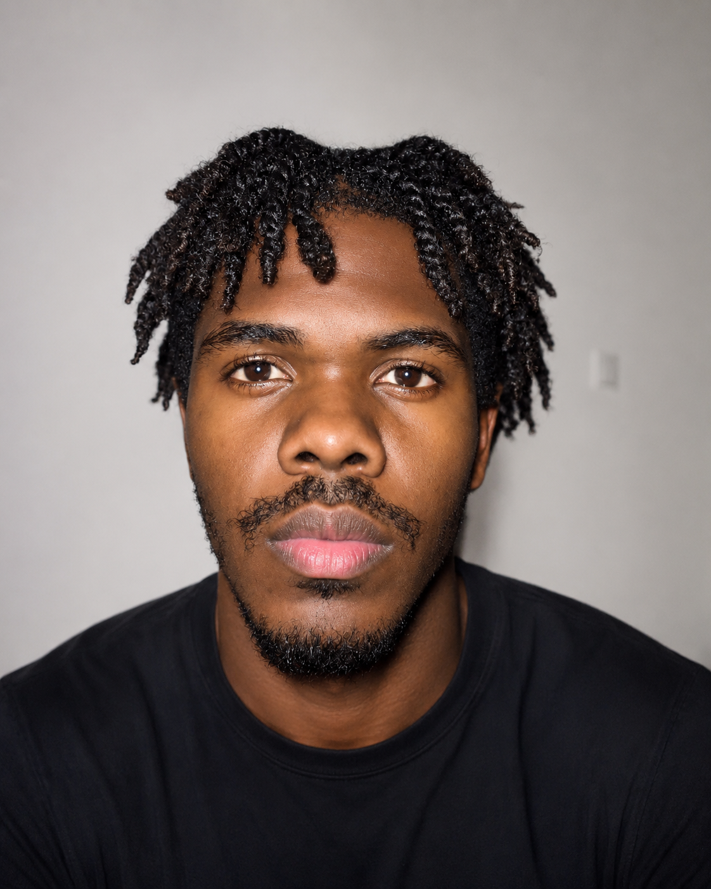

Je suis capable de concevoir une structure HTML propre et sémantique, de créer des interfaces web modernes, attractives et responsives avec HTML et CSS, et je développe progressivement mes compétences en JavaScript. J'ai une bonne maîtrise des outils informatiques et des logiciels courants, ce qui me permet de m'adapter rapidement à de nouveaux environnements de travail. Curieux, autonome et passionné par les nouvelles technologies, j'aime apprendre en continu et relever de nouveaux défis. Je suis rigoureux dans mon travail, attentif aux détails et toujours à la recherche de solutions efficaces. Je m'intéresse également au design d'interfaces (UI), à l'expérience utilisateur (UX) et aux bonnes pratiques du web afin de créer des sites à la fois esthétiques et fonctionnels. Mon objectif est de continuer à évoluer vers le développement Full-Stack et d'élargir mes compétences dans des domaines comme DevOps.